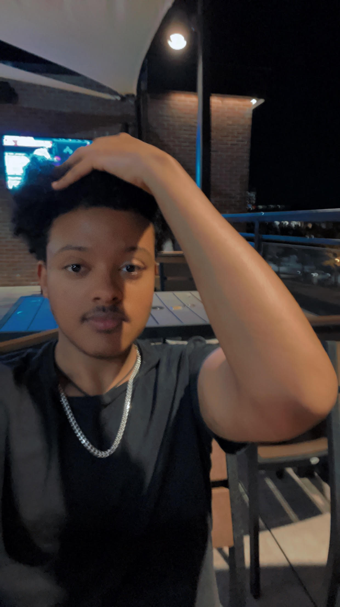

I'm Dagim Tibebeselassie, a driven individual passionate about web development and computer science. Graduating from Tucker High School, I completed six AP courses, including Computer Science, Statistics, and US History. I've developed websites like Bugatti and Tucker High's Counseling Department. As a finalist in GA TSA's Web Development competition and Georgia Tech and Amazon Earsketch Coding Competition, I excel in competitive events. Beyond academics, I contribute to the community through clubs, festivals, local initiatives, and promoting cleanliness. Working part-time as a Customer Advisor at Best Buy, I enhance communication skills and adaptability. Eager to pursue a Computer Science degree at Georgia State University and become a software engineer, I aim to bring a diverse perspective to my work. Thank you for learning about me—I'm excited to make an impact!
More Information onwoibnwoibn